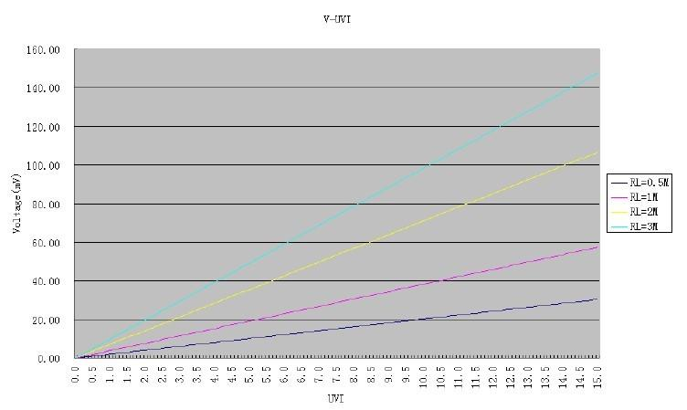
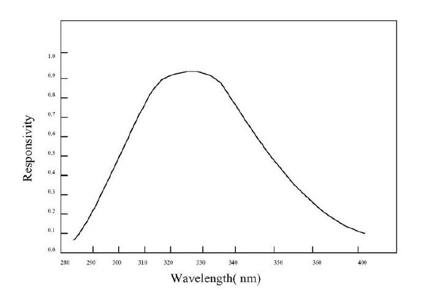

Xadow UV Sensor is suitable for measuring the UV radiation in sunlight. It can detect the UV wavelength of 290 ~ 400 nm. The UV Sensor is outputting digital voltage value corresponding to UV light intensity. With the diagram of output voltage and UV, we can easy to know the current UV index. The Xadow UV Sensor can be powered by 3.3V. And it is compatible with Xadow system.
Xadow UV Sensor can output a voltage value corresponding to UV index. Because there is a linear relationship between the output voltage and UV index, you can also directly see UV index with a formula. Next we show how to use UV sensor to know the UV index and display it on the OLED screen.
Required Xadow module: Xadow - Main Board, Xadow - OLED 128*64, Xadow - UV Sensor
Hardware Installation
图片
Note: when connect Xadow UV Sensor to Xadow Main Board, you should concern about the connection direction. The connection method is that the unfilled corner of one Xadow module need to connect to the right angle of another module(see four corners of each Xadow module).
Download Code
#include <Wire.h>
#include <SeeedOLED.h>
#include <Streaming.h>
#define ADDR_ADC121 0x5A
#define V_REF 3.00
#define REG_ADDR_RESULT 0x00
#define REG_ADDR_ALERT 0x01
#define REG_ADDR_CONFIG 0x02
#define REG_ADDR_LIMITL 0x03
#define REG_ADDR_LIMITH 0x04
#define REG_ADDR_HYST 0x05
#define REG_ADDR_CONVL 0x06
#define REG_ADDR_CONVH 0x07
unsigned int getData;
float analogVal=0;
float UVIndex = 0;
void init_adc()
{
Wire.beginTransmission(ADDR_ADC121); // transmit to device
Wire.write(REG_ADDR_CONFIG); // Configuration Register
Wire.write(0x20);
Wire.endTransmission();
}
void setup()
{
Wire.begin();
Serial.begin(38400);
SeeedOled.init(); //initialize SEEED OLED display
SeeedOled.clearDisplay(); // clear the screen and set start position to top left corner
init_adc();
}
void loop()
{
readVoltage();
//SeeedOled.clearDisplay();
SeeedOled.setTextXY(1,0);
SeeedOled.putString("Voltage: ");
SeeedOled.setTextXY(1,8);
SeeedOled.putFloat(analogVal);
SeeedOled.setTextXY(1,12);
SeeedOled.putString("mV");
SeeedOled.setTextXY(2,0);
SeeedOled.putString("UVIndex: ");
SeeedOled.setTextXY(2,8);
SeeedOled.putFloat(UVIndex);
delay(50);
}
void readVoltage() //unsigned int *data
{
Wire.beginTransmission(ADDR_ADC121); // transmit to device
Wire.write(REG_ADDR_RESULT); // get result
Wire.endTransmission();
Wire.requestFrom(ADDR_ADC121, 2); // request 2byte from device
delay(1);
if(Wire.available()<=2)
{
getData = (Wire.read()&0x0f)<<8;
getData |= Wire.read();
}
delay(50);
analogVal = getData*V_REF/4096/2;
Serial.print("analogVal:");
Serial.print(analogVal);
Serial.println("mV");
UVIndex = analogVal/9.71;
Serial.print("UVIndex:");
Serial.println(UVIndex);
}

About the Xadow UV Sensor, we use a resistance which resistance value is 3M, so you need refer to this line for RL=3M.
It is linear observing the relationship between voltage and UV. And the formula by calculated can be gotten: UV Index = Voltage/9.71 which has been used in code.
The Xadow UV Sensor has a seven-bit hardware address which is referred to as a slave address. And the slave address is configured by the ADR0 and ADR1 address selection inputs. ADR0 and ADR1 can be low level, left floating, or tied to high level.The state of these inputs sets the hardware address that the module responds to on the I2C bus (see the below Table).
| Slave Address[A6 - A0] | ADR0 and ADR1 inputs state | |
|---|---|---|
| ADR1 | ADR0 | |
| 1010000(0x50) | Floating | Floating |
| 1010001(0x51) | Floating | L |
| 1010010(0x52) | Floating | H |
| 1010100(0x54) | L | Floating |
| 1010101(0x55) | L | L |
| 1010110(0x56) | L | H |
| 1011000(0x58) | H | Floating |
| 1011001(0x59) | H | L |
| 1011010(default 0x5A) | H | H |
In default mode, ADR0 and ADR1 are connected to "H"(see the Xadow UV Sensor)
